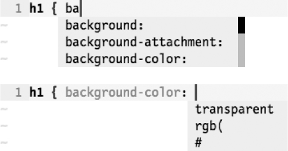
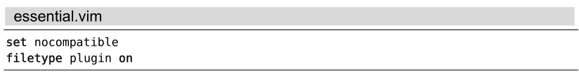

）进行触发。
）进行触发。技巧117根据上下文自动补全
全能补全是由Vim实现的intellsense 功能(1)。它将提供一份为光标所处的上下文量身定做的补全建议列表。在本节中，我们将看到它在CSS文件的上下文中是如何工作的。

图5 ——CSS属性与值的全能补全
全能补全功能可通过<C-x><C-o>命令（参见:h compl-omni）进行触发。
实际上，该功能由专用的文件类型插件实现，因此，我们必须先加载以下配置行：

此外，我们还必须安装一个为所用语言实现了全能补全功能的插件。Vim的发行版本身就支持十几种语言，包括HTML、CSS、JavaScript、PHP以及SQL。你可以通过:h compl-omni-filetypes找到完整的列表。
图5展示了在某个CSS文件中有两处有细微不同的上下文时，触发全能补全的结果。在第一次触发全能补全时，由于“ba”作为CSS属性的一部分，因此显示的列表内容将包括background、background-attachment以及其他的几种属性。在此例中，我们选择的是background-color。而当第二次触发全能补全时，尽管我们没有输入任何文本，但Vim会根据上下文判断出我们需要的是颜色信息，因此，它为我们提供了3项补全建议：#、rgb(以及transparent。
CSS相对静态的语法特性决定了其非常适合采用全能补全功能，但如果你想在某个编程语言环境中使用该功能，实际的情况可能有所不同。如果你对基于某个特定语言的全能补全功能不满意，就到官网上淘个新插件，或者干脆自己写一个。要了解如何撰写全能补全插件，你可以查阅:h complete-functions。
(1) intellsense 是Intelligent Sense的缩写，指的是一套编程环境，它通过减少程序员常犯的误解、笔误以及其他错误，帮助他们加快编码的流程。http://en.wikipedia.org/wiki/Intelli-sense。——译者注